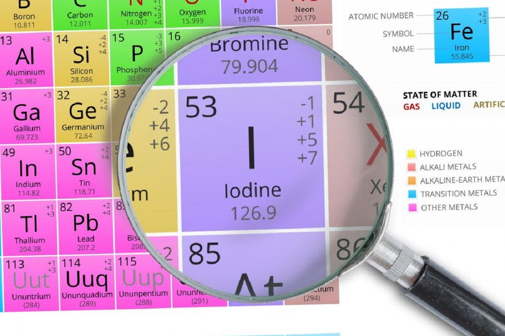
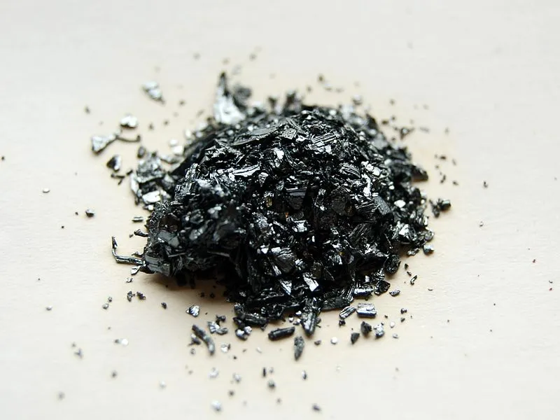

Иод
Ио́д (общеупотребительное название — йо́д; от греч. ἰώδης — «фиалковый (фиолетовый)», также от лат. Iodum) — химический элемент 17-й группы (по устаревшей классификации — главной подгруппы седьмой группы, VIIA), пятого периода периодической системы химических элементов Д. И. Менделеева, с атомным номером 53.Фазовая диаграмма иода: тройная точка 386,65 К (113,5 °С), 12,1 кПа (0,12 атм); критическая точка 819 К (546 °С), 11,7 МПа (115 атм)Ниже температуры тройной точки на диаграмме фазового равновесия имеется только линия сублимации. Поэтому при относительно медленном (квазистатическом) нагреве в открытой системе, когда подавляющая часть подводимой от нагревателя энергии расходуется на фазовый переход (возгонку), а не на повышение температуры твёрдой фазы, иод, не плавясь, возгоняется и превращается сразу в пары. Наоборот, при охлаждении иод десублимируется и образует кристаллы, минуя жидкое состояние. Для превращения в жидкость твёрдый иод нагревают в закрытом сосуде. При очень быстром (нестатическом) нагреве иод плавится даже в открытом сосуде Простое вещество иод (при нормальных условиях) — это кристаллы (формула — I2) чёрно-серого цвета с фиолетовым металлическим блеском, проявляющие неметаллические свойства и издающие характерный запах. Легко образует фиолетовые пары, обладающие резким запахом. Элементарный иод высокотоксичен.

Иод впервые выделил в 1811 г. французский химик Б. Куртуа, действуя концентрированной H2SO4 на золу морских водорослей. Латинское название элемента происходит от греч. ἰώδης – фиолетовый и связано с цветом паров иода.

Содержание иода в земной коре составляет 4·10–5 % по массе. В природе иод в основном находится в морской воде и морских водорослях, а также в нефтяных буровых водах; входит в состав минералов – природных иодидов и иодатов, например лаутарита Ca(IO3)2.
В промышленности иод выделяют из буровых вод и из золы морских водорослей. Для извлечения иода буровые воды, содержащие иодиды, обрабатывают при подкислении хлором; выделившийся иод выдувают водяным паром. Для очистки иода через реакционную смесь пропускают диоксид серы SO2.Иод и его соединения применяются в медицине; препараты иода, способные высвобождать элементарный иод, обладают антибактериальными, противогрибковыми и противовоспалительными свойствами. Иод используется в химических транспортных реакциях для получения высокочистых Ti, Zr и других металлов, а также кремния; для заполнения иодных ламп накаливания, которые характеризуются высокой световой отдачей, небольшими размерами и длительным сроком эксплуатации. Радиоактивные изотопы 125I (период полураспада T1/2 59,4 сут), 131I (T1/2 8,04 сут), 132I (T1/2 2,28 ч) используются в биологии и медицине для определения функционального состояния щитовидной железы и лечения её заболеваний.